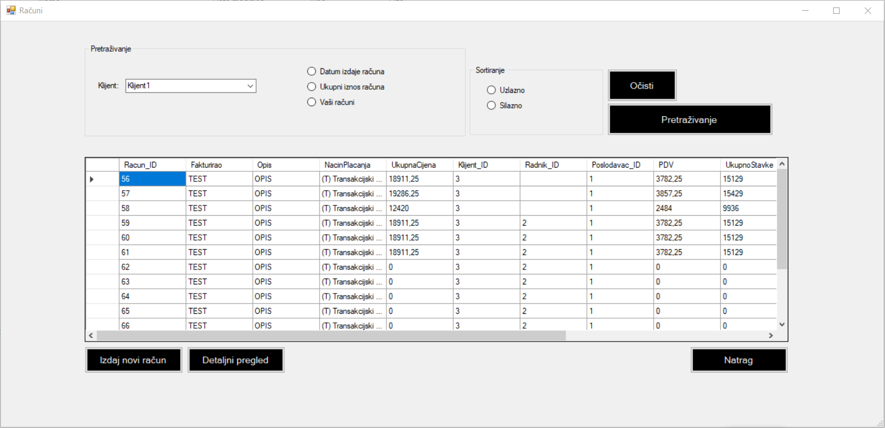

Forma računi je prva forma koja predstavlja upravljanje s računima. Sadrži nekoliko opcija. Prva opcija, ujedno i najvažnija opcija je mogućnost izdavanja računa. O toj formi će biti riječ kasnije. Isto tako to vrijedi, ako se želi otvoriti detaljni pregled. Kada se forma učita na njoj se u prikazu učitaju svi računi od poslodavca. Vidimo da imamo mogućnost pretraživanja po klijentu po datumu izadavanja računa, ukupnome iznosu računa i računima radnika. Također, omogućeno je i sortiranje, uzlazno koj je po standardnim postavkama i silazno. Kada odabare što želite sortirati, morate kliknuti na gumb Pretraživanje pa ovisno o kriterijima, ispisati će se određeni računi. Možemo resetirati kriterije klikom na gumb Očisti gdje se opet prikazuju svi računi.
